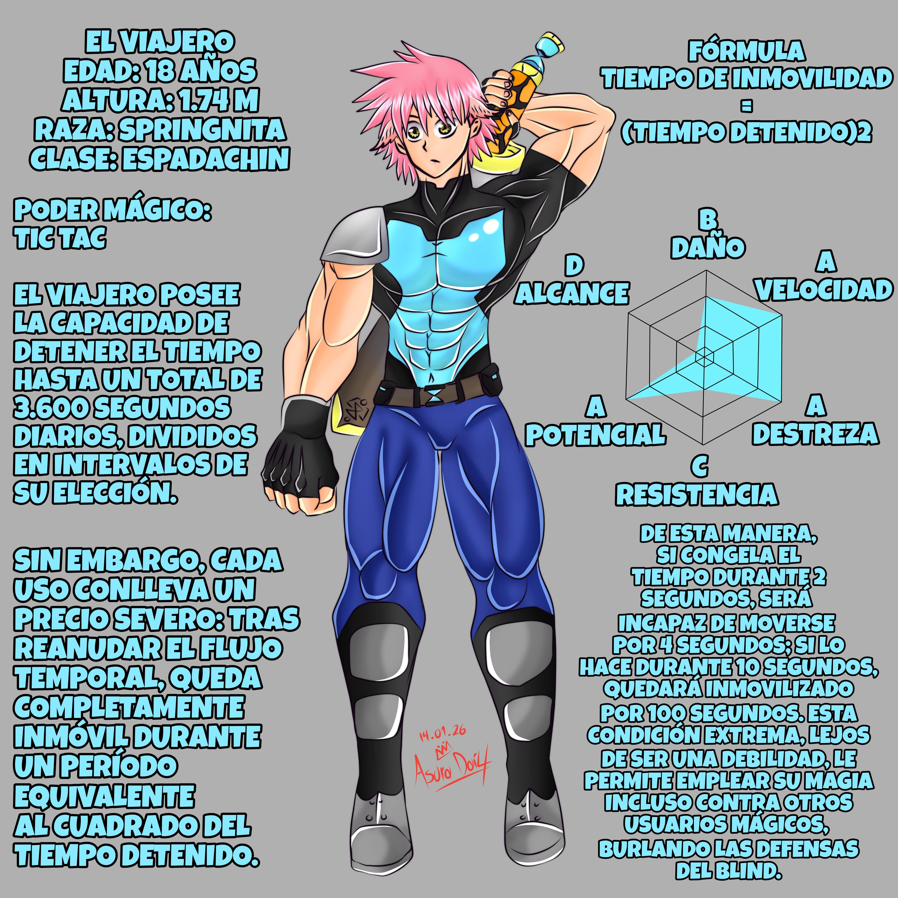
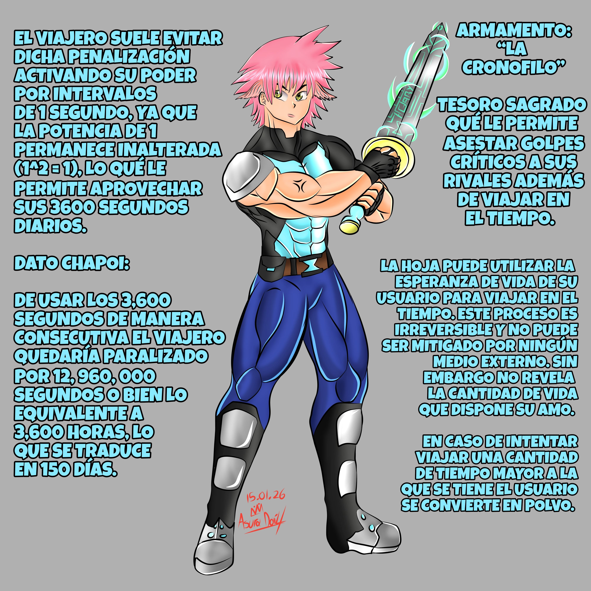

El “Viajero”, un guerrero formidable dotado del poder de detener el
tiempo durante un máximo de 3,600 segundos al día, en intervalos de
su elección. Sin embargo, este don conlleva un alto precio: tras
liberar su magia, queda completamente incapacitado para moverse
durante un periodo equivalente al cuadrado del tiempo que haya
detenido.
Fórmula
Tiempo De Inmovilidad = (Tiempo Detenido)^2
Además, cuenta con el apoyo de la “Cronófilo”, un tesoro
sagrado que le permite asestar golpes letales mientras el tiempo
permanece detenido. Por ello, el Viajero procura limitar sus
detenciones a tan solo un segundo, de modo que la penalización resulte
manejable. Aunque pueda parecer insignificante, su prodigiosa velocidad
convierte ese breve instante en tiempo más que suficiente para ejecutar
sus técnicas y derrotar a sus oponentes.
La Cronófilo posee otra cualidad aún más terrible: permite a su portador
viajar en el tiempo utilizando su propia esperanza de vida como combustible.
Este proceso es irreversible y no puede ser mitigado por ningún medio externo.
El arma tampoco revela cuánta vida le queda a su amo; si este intenta viajar más
tiempo del que su vida permite, su cuerpo se reduce a polvo.
Debe considerarse que el tiempo viajado y el tiempo perdido no son equivalentes.
Viajar un año al pasado consume dos años de vida; retroceder diez años exige
veinte. Aun así, también es posible crear pequeños bucles temporales,
retrocediendo solo una hora o incluso unos minutos, aunque el costo siempre
será el doble del tiempo retrocedido.
Nuestro héroe decide viajar 24 años al pasado para impedir un
evento destinado a culminar en la extinción de la raza humana.
Esto acortará su vida de manera drástica, pero está decidido a pagar el precio.
Originalmente, sería su compañera quien realizaría el viaje; sin embargo, al
ser la portadora original de la Cronófilo, ya había reducido su esperanza de
vida en múltiples ocasiones. Temiendo que el tiempo que le quedaba fuera
insuficiente, el Viajero no dudó en hurtar el arma y asumir la responsabilidad,
aun sabiendo que se trataba de un viaje sin retorno.
La fecha de su llegada coincide con El Torneo de los Más Fuertes, por lo que su
participación es inevitable. Allí busca conocer de primera mano las leyendas de
las que tanto había oído hablar en su infancia, incluyendo a sus propios padres,
desaparecidos cuando él aún era un bebé. Su poder no tardó en demostrarse al
enfrentarse a un vestigio del “Rey Fantasma”,
portador tanto de sus habilidades como de las de sus Siete Horrores, y también al
tirano Von Nolc. Estas intervenciones
alteraron el curso de los acontecimientos… aunque quizá no de la forma que él
esperaba.